Solves the empirical Bayes normal means (EBNM) problem using a specified family of priors. For an article-length introduction to the package, see Willwerscheid and Stephens (2021), cited in References below.
ebnm(
x,
s = 1,
prior_family = c("point_normal", "point_laplace", "point_exponential", "normal",
"horseshoe", "normal_scale_mixture", "unimodal", "unimodal_symmetric",
"unimodal_nonnegative", "unimodal_nonpositive", "generalized_binary", "npmle",
"deconvolver", "flat", "point_mass", "ash"),
mode = 0,
scale = "estimate",
g_init = NULL,
fix_g = FALSE,
output = ebnm_output_default(),
optmethod = NULL,
control = NULL,
...
)
ebnm_output_default()
ebnm_output_all()A vector of observations. Missing observations (NAs) are
not allowed.
A vector of standard errors (or a scalar if all are equal).
Standard errors may not be exactly zero, and
missing standard errors are not allowed. Two prior families have
additional restrictions: when horseshoe priors are used, errors
must be homoskedastic; and since function
deconv in package deconvolveR takes
\(z\)-scores, the "deconvolver" family requires that all standard errors
be equal to 1.
A character string that specifies the prior family \(G\). See Details below.
A scalar specifying the mode of the prior \(g\) or
"estimate" if the mode is to be estimated from the data. This
parameter is ignored by the NPMLE, the deconvolveR family,
and the improper uniform (or "flat") prior. For generalized binary priors,
which are bimodal, the mode parameter specifies the mode of the truncated
normal component (the location of the point mass is fixed at zero).
A scalar or vector specifying the scale parameter(s) of the
prior or "estimate" if the scale parameters are to be estimated
from the data. This parameter is ignored by the flat prior and the family
of point mass priors.
The interpretation of scale depends on the prior
family. For normal and point-normal families, it is a scalar
specifying the standard deviation of the normal component. For
point-Laplace and point-exponential families, it is a scalar specifying
the scale parameter of the Laplace or exponential component. For the horseshoe
family, it corresponds to \(s\tau\) in the usual parametrization of
the horseshoe distribution. For the family of generalized
binary priors, it specifies the ratio of the (untruncated) standard
deviation of the normal component to its mode.
This ratio must be fixed in advance (i.e., argument "estimate" is
unavailable for generalized binary priors). For the NPMLE and deconvolveR
prior family, scale is a scalar specifying the distance between
successive means in the grid of point masses or normal distributions
used to estimate \(g\).
For all other prior families, which are implemented using the function
ash in package ashr, it is a vector specifying
the parameter mixsd to be passed to ash or "estimate"
if mixsd is to be chosen by ebnm. (Note that ebnm chooses
mixsd differently from ash: see functions
ebnm_scale_normalmix, ebnm_scale_unimix, and
ebnm_scale_npmle for details. To use the ash grid, set
scale = "estimate" and pass in gridmult as an additional
parameter. See ash for defaults and details.)
The prior distribution \(g\). Usually this is left
unspecified (NULL) and estimated from the data. However, it can be
used in conjuction with fix_g = TRUE to fix the prior (useful, for
example, to do computations with the "true" \(g\) in simulations). If
g_init is specified but fix_g = FALSE, g_init
specifies the initial value of \(g\) used during optimization. For
non-parametric priors, this has the side effect of fixing the mode
and scale parameters. If g_init is supplied, it should be
an object of class normalmix for normal, point-normal,
scale mixture of normals, and deconvolveR prior families, as well as
for the NPMLE; class laplacemix for
point-Laplace families; class gammamix for point-exponential
families; class horseshoe for horseshoe families; class
unimix for unimodal_ families; or class
tnormalmix for generalized binary priors. An object of
class ebnm can also be supplied as argument, provided that field
fitted_g contains a prior of the correct class (see
Examples below).
If TRUE, fix the prior \(g\) at g_init instead
of estimating it.
A character vector indicating which values are to be returned.
Function ebnm_output_default() provides the default return values, while
ebnm_output_all() lists all possible return values. See Value
below.
A string specifying which optimization function is to be
used. Since all non-parametric families rely upon external packages, this
parameter is only available for parametric families (point-normal,
point-Laplace, point-exponential, and normal). Options include "nlm",
"lbfgsb" (which calls
optim with method = "L-BFGS-B"), and "trust" (which
calls into package trust). Other options are "nohess_nlm",
"nograd_nlm", and "nograd_lbfgsb", which use numerical
approximations rather than exact expressions for the Hessian and (for
the latter two) the gradient. The default option is "nohess_nlm".
A list of control parameters to be passed to the optimization
function. optimize is used for normal and horseshoe
prior families, while nlm is used for parametric
families unless parameter optmethod specifies otherwise.
nlm is also used for the deconvolveR prior family.
For ash families (including scale mixtures of normals, the NPMLE, and
all unimodal_ families), function mixsqp in
package mixsqp is the default. For generalized binary priors,
function optim is used with method = "L-BFGS-B".
Additional parameters. When a unimodal_ prior family is used,
these parameters are passed to function ash in package
ashr. Although it
does not call into ashr, the scale mixture of normals family accepts
parameter gridmult for purposes of comparison. When gridmult
is set, an ashr-style grid will be used instead of the default
ebnm grid. When the "deconvolver" family is used, additional
parameters are passed to function deconv in
package deconvolveR. Families of generalized binary priors take several
additional parameters; see ebnm_generalized_binary. In all
other cases, additional parameters are ignored.
An ebnm object. Depending on the argument to output, the
object is a list containing elements:
dataA data frame containing the observations x
and standard errors s.
posteriorA data frame of summary results (posterior means, standard deviations, second moments, and local false sign rates).
fitted_gThe fitted prior \(\hat{g}\) (an object of
class normalmix, laplacemix,
gammamix, unimix,
tnormalmix, or horseshoe).
log_likelihoodThe optimal log likelihood attained, \(L(\hat{g})\).
posterior_samplerA function that can be used to
produce samples from the posterior. For all prior families other
than the horseshoe, the sampler takes a single parameter
nsamp, the number of posterior samples to return per
observation. Since ebnm_horseshoe returns an MCMC sampler,
it additionally takes parameter burn, the number of burn-in
samples to discard.
S3 methods coef, confint, fitted, logLik,
nobs, plot, predict, print, quantile,
residuals, simulate, summary, and vcov
have been implemented for ebnm objects. For details, see the
respective help pages, linked below under See Also.
Given vectors of data x and standard errors s, ebnm
solves the "empirical Bayes normal means" (EBNM) problem for various
choices of prior family.
The model is $$x_j | \theta_j, s_j \sim N(\theta_j, s_j^2)$$
$$\theta_j \sim g \in G,$$ where \(g\), which is referred to as the
"prior distribution" for \(\theta\), is to be estimated from among
some specified family of prior distributions \(G\). Several options
for \(G\) are implemented, some parametric and others non-parametric;
see below for examples.
Solving the EBNM problem involves two steps. First, \(g \in G\) is estimated via maximum marginal likelihood: $$\hat{g} := \arg\max_{g \in G} L(g),$$ where $$L(g) := \prod_j \int p(x_j | \theta_j, s_j) g(d\theta_j).$$ Second, posterior distributions \(p(\theta_j | x_j, s_j, \hat{g})\) and/or summaries such as posterior means and posterior second moments are computed.
Implemented prior families include:
point_normalThe family of mixtures where one component is a point mass at \(\mu\) and the other is a normal distribution centered at \(\mu\).
point_laplaceThe family of mixtures where one component is a point mass at \(\mu\) and the other is a double-exponential distribution centered at \(\mu\).
point_exponentialThe family of mixtures where one component is a point mass at \(\mu\) and the other is a (nonnegative) exponential distribution with mode \(\mu\).
normalThe family of normal distributions.
horseshoeThe family of horseshoe distributions.
normal_scale_mixtureThe family of scale mixtures of normals.
unimodalThe family of all unimodal distributions.
unimodal_symmetricThe family of symmetric unimodal distributions.
unimodal_nonnegativeThe family of unimodal distributions with support constrained to be greater than the mode.
unimodal_nonpositiveThe family of unimodal distributions with support constrained to be less than the mode.
generalized_binaryThe family of mixtures where one component is a point mass at zero and the other is a truncated normal distribution with lower bound zero and nonzero mode. See Liu et al. (2023), cited in References below.
npmleThe family of all distributions.
deconvolverA non-parametric exponential family with
a natural spline basis. Like npmle, there is no unimodal
assumption, but whereas npmle produces spiky estimates for
\(g\), deconvolver estimates are much more regular. See
deconvolveR-package for details and
references.
flatThe "non-informative" improper uniform prior, which yields posteriors $$\theta_j | x_j, s_j \sim N(x_j, s_j^2).$$
point_massThe family of point masses \(\delta_\mu\). Posteriors are point masses at \(\mu\).
ashCalls into function ash in
package ashr. Can be used to make direct comparisons of
ebnm and ashr implementations of prior families such as
scale mixtures of normals and the NPMLE.
ebnm_output_default(): Lists the default return values.
ebnm_output_all(): Lists all valid return values.
Jason Willwerscheid and Matthew Stephens (2021).
ebnm: an R Package for solving the empirical Bayes
normal means problem using a variety of prior families. arXiv:2110.00152.
Yusha Liu, Peter Carbonetto, Jason Willwerscheid, Scott A Oakes, Kay F Macleod, and Matthew Stephens (2023). Dissecting tumor transcriptional heterogeneity from single-cell RNA-seq data by generalized binary covariance decomposition. bioRxiv 2023.08.15.553436.
A plotting method is available for ebnm objects: see
plot.ebnm.
For other methods, see coef.ebnm, confint.ebnm,
fitted.ebnm, logLik.ebnm,
nobs.ebnm, predict.ebnm,
print.ebnm, print.summary.ebnm,
quantile.ebnm, residuals.ebnm,
simulate.ebnm,
summary.ebnm, and vcov.ebnm.
Calling into functions ebnm_point_normal,
ebnm_point_laplace,
ebnm_point_exponential, ebnm_normal,
ebnm_horseshoe,
ebnm_normal_scale_mixture, ebnm_unimodal,
ebnm_unimodal_symmetric,
ebnm_unimodal_nonnegative,
ebnm_unimodal_nonpositive,
ebnm_generalized_binary, ebnm_npmle,
ebnm_deconvolver, ebnm_flat,
ebnm_point_mass, and ebnm_ash
is equivalent to calling into ebnm with prior_family set
accordingly.
theta <- c(rep(0, 100), rexp(100))
s <- 1
x <- theta + rnorm(200, 0, s)
# The following are equivalent:
pn.res <- ebnm(x, s, prior_family = "point_normal")
pn.res <- ebnm_point_normal(x, s)
# Inspect results:
logLik(pn.res)
#> 'log Lik.' -371.7554 (df=2)
plot(pn.res)

# Fix the scale parameter:
pl.res <- ebnm_point_laplace(x, s, scale = 1)
# Estimate the mode:
normal.res <- ebnm_normal(x, s, mode = "estimate")
plot(normal.res) # posterior means shrink to a value different from zero

# Use an initial g (this fixes mode and scale for ash priors):
normalmix.res <- ebnm_normal_scale_mixture(x, s, g_init = pn.res)
# Fix g and get different output (including a posterior sampler):
pn.res <- ebnm_point_normal(x, s, g_init = pn.res, fix_g = TRUE,
output = ebnm_output_all())
# Sample from the posterior:
pn.samp <- simulate(pn.res, nsim = 100)
# Quantiles and HPD confidence intervals can be obtained via sampling:
set.seed(1)
pn.quantiles <- quantile(pn.res, probs = c(0.1, 0.9))
pn.quantiles[1:5, ]
#> 10% 90%
#> [1,] 0.0000000 0
#> [2,] -1.1604042 0
#> [3,] -0.8169761 0
#> [4,] -1.3102535 0
#> [5,] -0.4967563 0
confint(pn.res, level = 0.8, parm = 1:5)
#> CI.lower CI.upper
#> [1,] 0.000000000 0.000000000
#> [2,] -0.585049305 0.085295100
#> [3,] -0.009535271 0.073084485
#> [4,] -0.395786725 0.003410595
#> [5,] 0.000000000 0.000000000
# Examples of usage of control parameter:
# point_normal uses nlm:
pn.res <- ebnm_point_normal(x, s, control = list(print.level = 1))
#> iteration = 0
#> Step:
#> [1] 0 0
#> Parameter:
#> [1] 0.0000000 0.9639323
#> Function Value
#> [1] 189.6364
#> Gradient:
#> [1] -0.09671647 -5.99246218
#>
#> iteration = 8
#> Parameter:
#> [1] 0.6782964 1.5283800
#> Function Value
#> [1] 187.9677
#> Gradient:
#> [1] 1.267844e-05 -3.980598e-07
#>
#> Relative gradient close to zero.
#> Current iterate is probably solution.
#>
# unimodal uses mixsqp:
unimodal.res <- ebnm_unimodal(x, s, control = list(verbose = TRUE))
#> Running mix-SQP algorithm 0.3-48 on 201 x 11 matrix
#> convergence tol. (SQP): 1.0e-08
#> conv. tol. (active-set): 1.0e-10
#> zero threshold (solution): 1.0e-08
#> zero thresh. (search dir.): 1.0e-14
#> l.s. sufficient decrease: 1.0e-02
#> step size reduction factor: 7.5e-01
#> minimum step size: 1.0e-08
#> max. iter (SQP): 1000
#> max. iter (active-set): 12
#> number of EM iterations: 20
#> Computing SVD of 201 x 11 matrix.
#> Matrix is not low-rank; falling back to full matrix.
#> iter objective max(rdual) nnz stepsize max.diff nqp nls
#> 1 +8.486446944e-01 -- EM -- 11 1.00e+00 1.10e-01 -- --
#> 2 +7.173501849e-01 -- EM -- 11 1.00e+00 1.14e-01 -- --
#> 3 +6.525665749e-01 -- EM -- 11 1.00e+00 9.23e-02 -- --
#> 4 +6.214948796e-01 -- EM -- 11 1.00e+00 6.67e-02 -- --
#> 5 +6.060744837e-01 -- EM -- 11 1.00e+00 4.64e-02 -- --
#> 6 +5.978730034e-01 -- EM -- 11 1.00e+00 3.24e-02 -- --
#> 7 +5.931416306e-01 -- EM -- 11 1.00e+00 2.29e-02 -- --
#> 8 +5.901938082e-01 -- EM -- 11 1.00e+00 1.65e-02 -- --
#> 9 +5.882356872e-01 -- EM -- 11 1.00e+00 1.22e-02 -- --
#> 10 +5.868687484e-01 -- EM -- 11 1.00e+00 9.18e-03 -- --
#> 11 +5.858779467e-01 -- EM -- 11 1.00e+00 7.04e-03 -- --
#> 12 +5.851388558e-01 -- EM -- 10 1.00e+00 5.49e-03 -- --
#> 13 +5.845749785e-01 -- EM -- 10 1.00e+00 4.34e-03 -- --
#> 14 +5.841368966e-01 -- EM -- 10 1.00e+00 3.47e-03 -- --
#> 15 +5.837914004e-01 -- EM -- 9 1.00e+00 2.81e-03 -- --
#> 16 +5.835154539e-01 -- EM -- 9 1.00e+00 2.29e-03 -- --
#> 17 +5.832926572e-01 -- EM -- 9 1.00e+00 1.88e-03 -- --
#> 18 +5.831110757e-01 -- EM -- 9 1.00e+00 1.55e-03 -- --
#> 19 +5.829618582e-01 -- EM -- 9 1.00e+00 1.29e-03 -- --
#> 20 +5.828383311e-01 -- EM -- 8 1.00e+00 1.08e-03 -- --
#> 1 +5.827353901e-01 +1.282e-02 8 ------ ------ -- --
#> 2 +5.819585606e-01 +6.205e-03 5 1.00e+00 3.60e-02 5 1
#> 3 +5.819566286e-01 +4.382e-05 5 1.00e+00 1.56e-03 2 1
#> 4 +5.819566282e-01 -2.086e-06 5 1.00e+00 3.58e-05 2 1
#> Optimization took 0.00 seconds.
#> Convergence criteria met---optimal solution found.